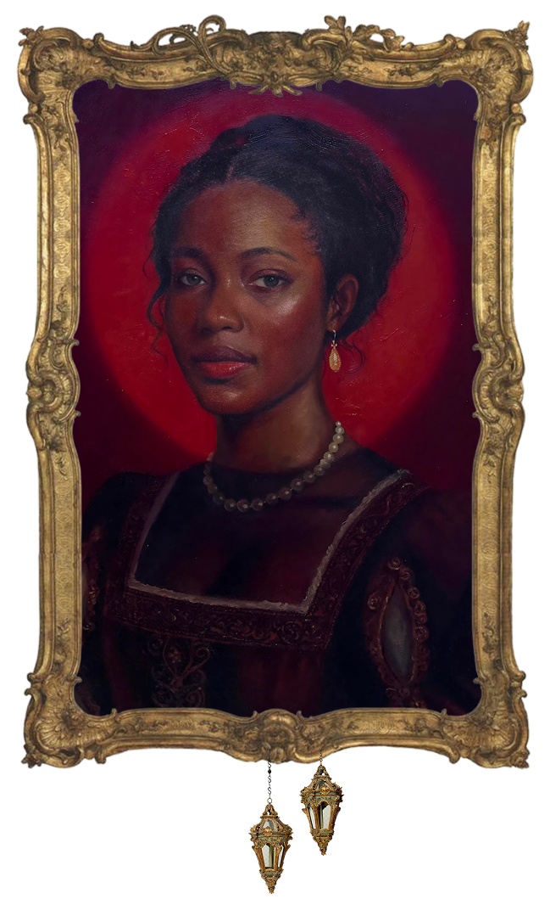
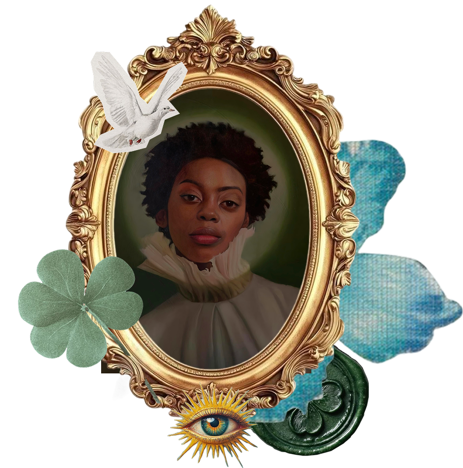
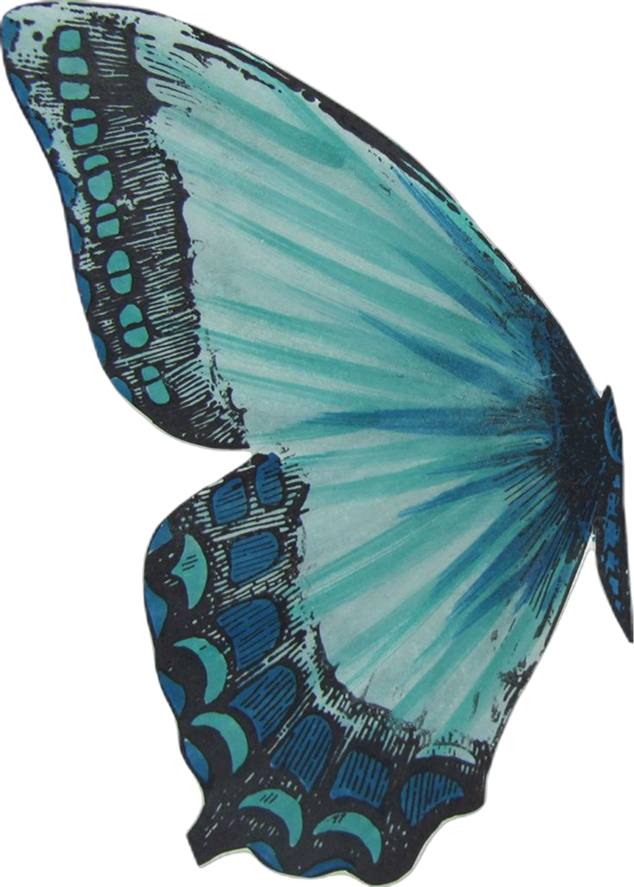
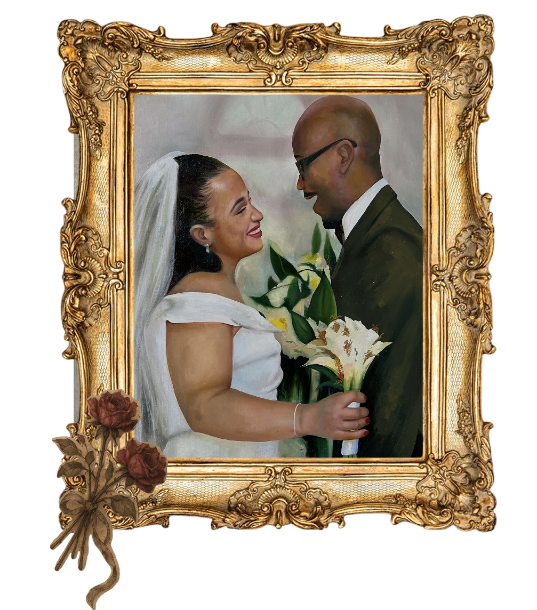
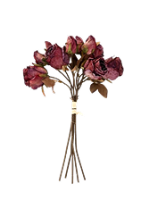
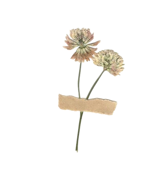

WELCOME TO THE
KUNLE ITUNU ARCHIVE
Explore the Digital Archive of KUNLE ITUNU. Explore a collection of original paintings that capture emotion, movement, and the essence of creative expression.

LADY IN RED
Explore the Digital Archive of KUNLE ITUNU. Explore a collection of original drawings that capture emotion, movement, and the essence of creative expression.

LADY IN GREEN
Explore the Digital Archive of
KUNLE
ITUNU. Explore a collection of original drawings that capture emotion,
movement, and the essence of creative expression.


LADY IN RED
Explore the Digital Archive of KUNLE ITUNU. Explore a collection of original drawings that capture emotion, movement, and the essence of creative expression.

